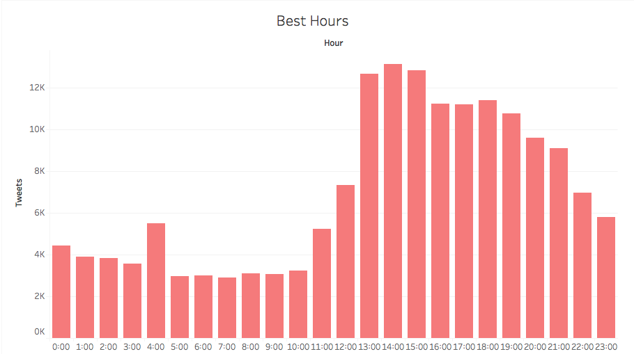
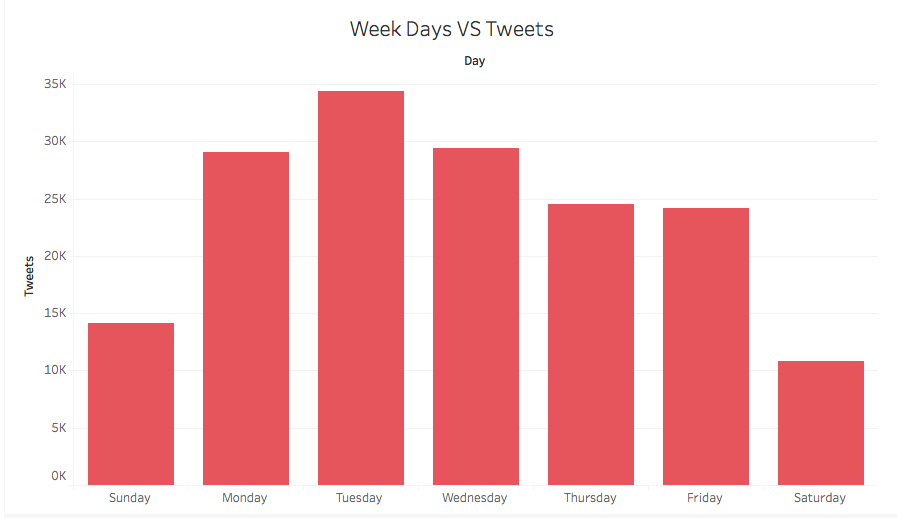
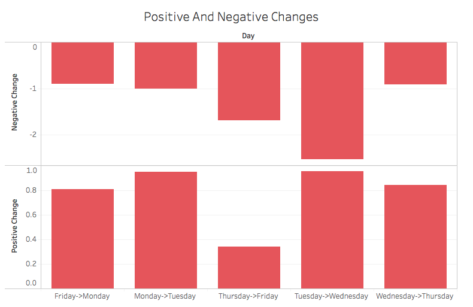
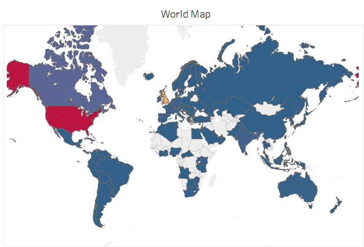

For data analysis and visualization purposes, Apple Inc. company has been used to visualize data and observe.
Using MapReduce techniques data was normalized to find the most active and passive times for twitter feed.

In Fig. 1 is illustrated the most active times of the twitter feed about Apple Inc.. Even though this information is not directly linked to the project purpose but this will help to observe social media and stock market more effectively.
Using MapReduce techniques data was normalized to find the most active and passive days for twitter feed.

In Fig. 2 is illustrated the most active days of the twitter feed about Apple Inc.. Even though this information is not directly linked to the project purpose but this will help to observe social media and stock market more effectively.
Using MapReduce techniques data was normalized to find average positive and average negative changes of the stock price of Apple Inc..

In Fig. 3 is illustrated the average negative and average positive price changes. Even though this information is not directly linked to the project purpose but this will help to observe social media and stock market more effectively.
The location of each Twitter user has been determined using Twitter Search API, and using MapReduce techniques the data was normalized.

In Fig. 4 is illustrated the world heat map showing number of tweets about Apple Inc.. Even though this information is not directly linked to the project purpose but this will help to observe social media and stock market more effectively.